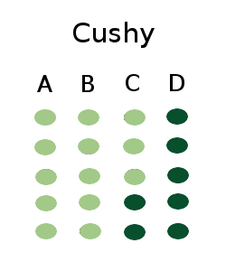

BaKaPlan
First Strategy: Cushy
Cushy means easy. This is the simplest strategy. In this strategy, seating plan is done continuously. For example, seating plan is done by allocating all roll nos. of first subject code then continuous with 2nd subject code and so on.
